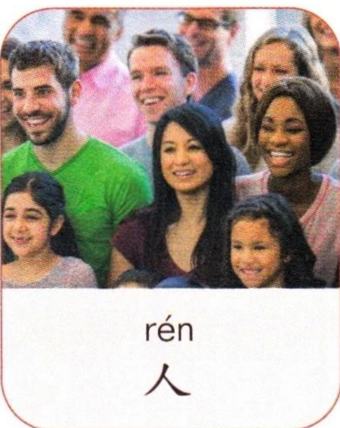
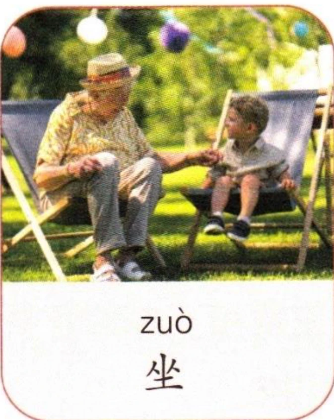
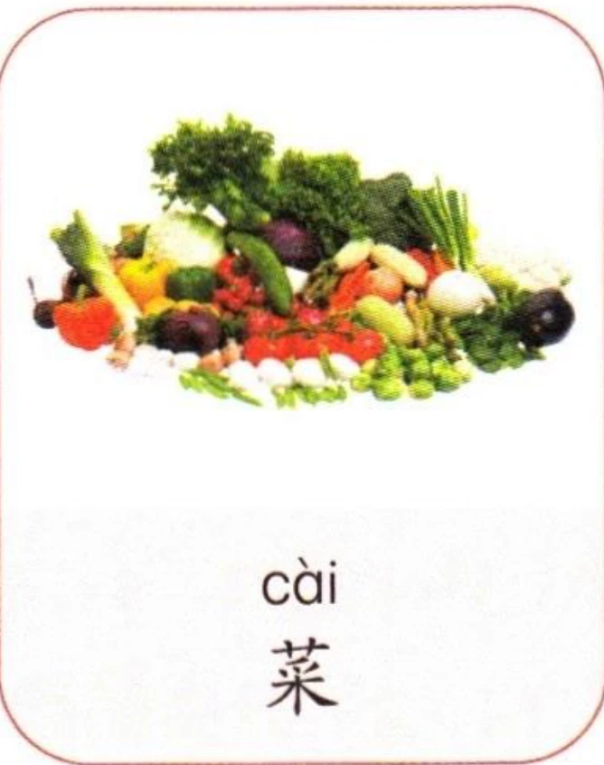
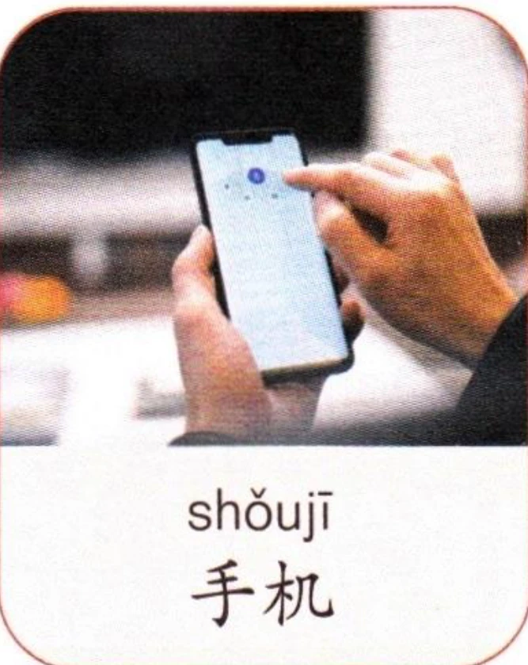
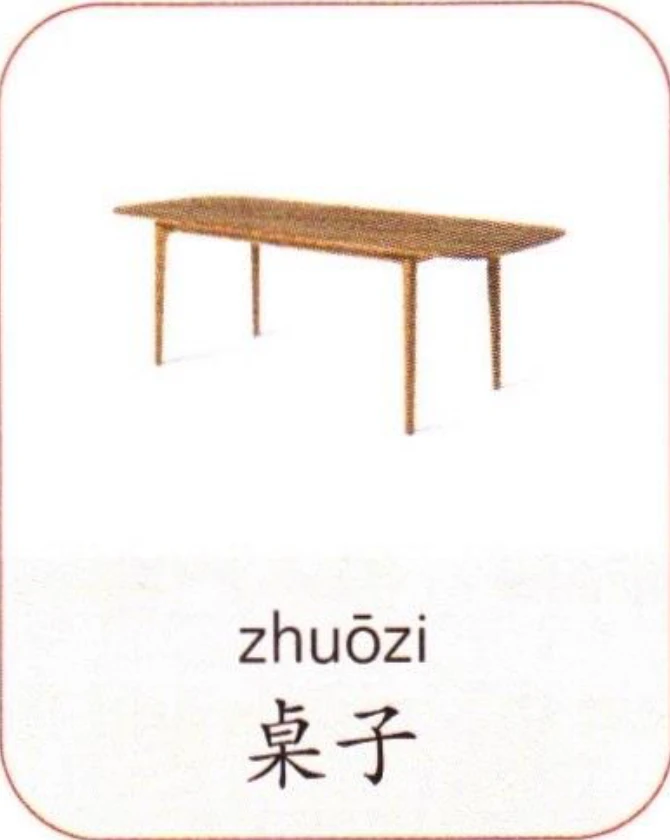
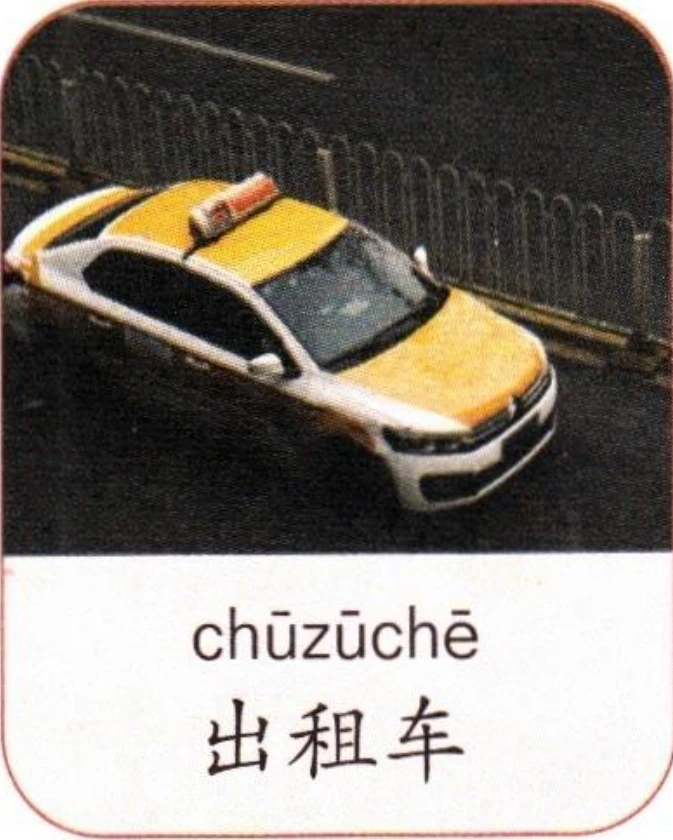

先跟读音节，再大声朗读。Listen and repeat the syllables, then read aloud.Послушайте и повторите слоги, затем прочитайте вслух.
看图片，先跟读音节，再大声朗读。Look at the pictures, listen and repeat the syllables, then read aloud.Посмотрите на картинки, послушайте и повторите слоги, затем прочитайте вслух.






2拼写规则Spelling RulesПравила правописания
(1)“u+韵母”类单独成音节时的写法Writing the finals beginning with “u” as independent syllablesНаписание финалей, начинающихся с «u», как самостоятельных слогов
韵母“ua、uo、uai、uei、uan、uen、uang、ueng”单独成音节时，“u”写作“w”，写成“wa、wo、wai、wei、wan、wen、wang、weng”。For the finals beginning with “u”, replace the initial “u” with “w” to form independent syllables. Thus, “ua” changes to “wa”, “uo” to “wo”, “uai” to “wai”, “uei” to “wei”, “uan” to “wan”, “uen” to “wen”, “uang” to “wang”, and “ueng” to “weng”.Для финалей, начинающихся с «u», замените начальное «u» на «w», чтобы образовать самостоятельные слоги. Таким образом, «ua» меняется на «wa», «uo» на «wo», «uai» на «wai», «uei» на «wei», «uan» на «wan», «uen» на «wen», «uang» на «wang» и «ueng» на «weng».
010